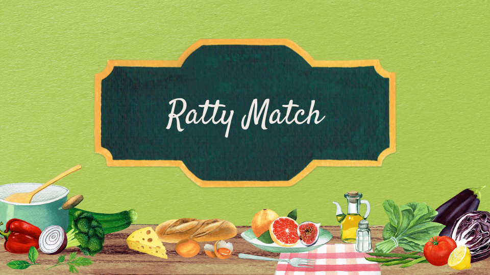
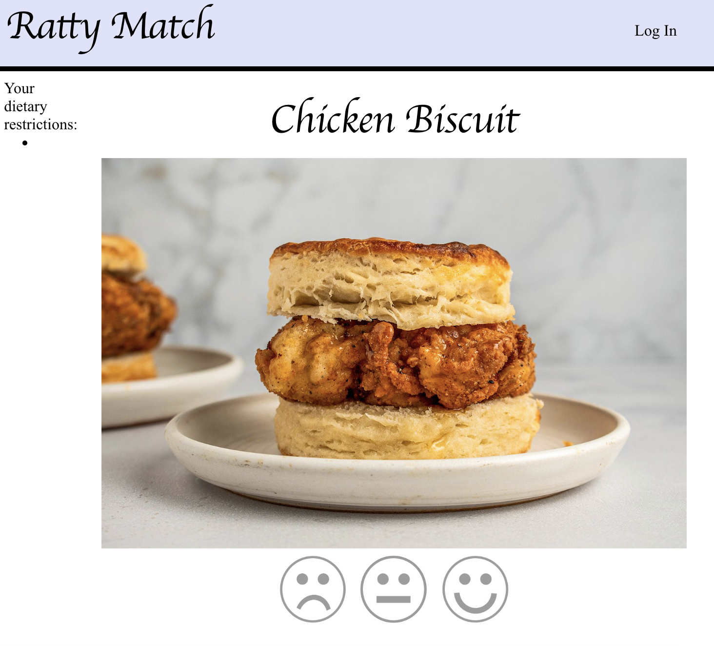
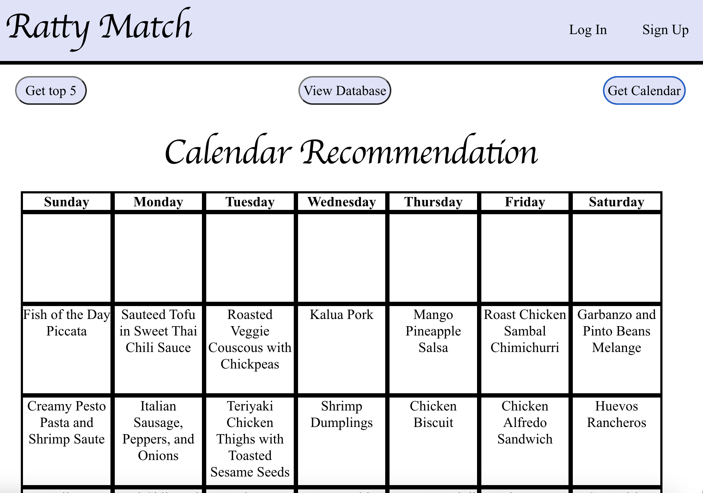
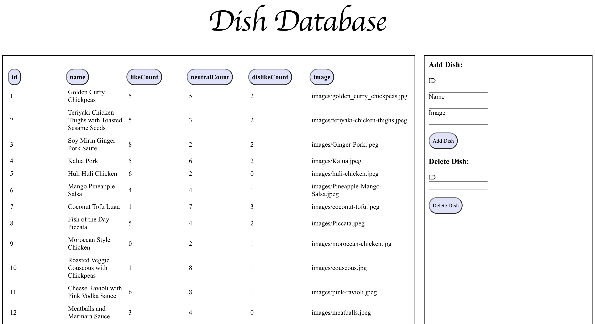

Software Development
Overview

Ratty Match is a fun and interactive way to make the voices of students at Brown University heard about their opinions of the food options at the Sharpe Refectory. In a group of 4, I helped create an application that allows students to vote for their favorite meals that the Ratty serves. Using the collected data from students, the system calculates the top rated dishes and creates a meal plan for the month to maximize overall meal ratings across each week. As students at Brown University who were on the meal plan, we all recognized the need for more student involvement with dining services and their decisions on what food gets served daily. Data on this topic was not only gathered from our personal experiences but from our friends’ and classmates' testimonies.
This project improves on existing approaches because it gathers more input from students to ensure that the dishes match student preferences. Currently, there is a survey that the dining services put out to get feedback; however, there is no incentive to get students to take the time to complete it. So this calls for a new method in receiving feedback from students, a new and engaging way to do so. The Tinder-like functionality will keep students engaged as they will rate meals with smiley reactions for dislike, like, and neutral ratings.
User Research
We surveyed several Brown students using a google form to gauge interest in the project. 100% of respondents said that they would be interested in rating meals at the Ratty if it affects what meals are served at the Ratty, so there was demonstrated interest in our project. Respondents said that they would be willing to rank anywhere between 5 and 20 dishes. Half of respondents also said that they would rank anything, even if the meals did not match their dietary preferences.
User Types:
- Student user: User who can rate meals from the dining hall
- Manager user: User type who can view the top five ranked dishes, view the calendar recommendation for the meal plan, and manage the database of meals
Student users must be able to:
- Sign up
- Log in
- Rate food dishes
Admin users must be able to:
- Add and delete food items to the database
- Get a meal plan recommendation for the month
Current users feel:
- Dining options are inconsistent
- Frustration about not being able to have input about what is served
Risks and Design Considerations
During the design process, we considered several possible risks related to project stakeholders and external factors. These risks are summarized below.
Stakeholder Risks
- There is a risk that our algorithm will favor certain stakeholders over others. If student
preferences are weighted more heavily than food workers' concerns, it could result in wasted
food inventory and monetary losses for Brown. If administrators’ interests were represented
more
heavily, there is a risk that students would be left unsatisfied with the app because their
choices were not being taken into account. It is important that our algorithm has a good
balance
between the interests of all stakeholders.
- Our project’s recommendations may affect stakeholders unequally. Since Brown administrators
are
managing budgets for food, and dining workers are the ones making the meals, there are
tangible
consequences for them if our project makes poor recommendations. This is opposed to
students,
who are only affected through their overall satisfaction. However, this does not mean that
we
should weigh Brown’s concerns more heavily than student concerns.
- We have to be careful with our methods of data collection. Data collection for this project will be an intensive task, and we must be careful that our methods of data collection are ethical. If we use web-scraping, we must be extra cautious in how we treat sensitive data and that data is stored securely.
External Risks
- There is a risk that we will underrepresent the dining preferences of students with dietary
restrictions. If we only consider the majority preference of students, we will leave out an
important group of students who have certain dietary requirements. We have to make sure that
we have a way to account for alternative meal requirements outside of the majority
preference.
- There is no filtering that is being done on either side of our user interface to provide filtered recommendations. For instance, there is no filtered recommendation for managers that could better show the preferences of students that have dietary restrictions. Furthermore, our rating algorithm does not take into account the needs of students by filtering the dishes they can rate. We have assumed that these students would rate items that do not fit their diet poorly.
Application Features
After gathering user research about the application requirements and considering potential design risks, we created our application. We highlight some of the application's features below.
Creating and logging into account
The only pages available to users when they first access the website will be a home page where users can choose to either log in or sign up. The login and sign-up pages will be available. The user must click on either the log in or sign up button and then they will be redirected to the appropriate page. Once on the page, they will put in information into a form that will either log them in or create an account. Once they make an account, an email will be sent to their email and they will be directed to a page to verify their email address, Once they open the link that was emailed to them, they will be verified and directed to either the student or manager page.
Student account

The student account has one page where they can rank the dishes, see that they are logged in, see their dietary restrictions, and have the option to sign out. The ranking page has an area where they can do tinder style reviewing of food items with three smiley face rating options: good, medium, or bad.
Admin account


The admin account has the option to see the top 5 best dishes or a recommendation of the month's meal plan. There is a button called admin where the database of dishes can be accessed. The ratings for each of the dishes can be accessed as well as the ability to add new dishes and remove ones that will no longer be cooked.
Summary
The food we consume affects all aspects of our lives. If we are given options that are simply not edible or are not appealing, we are not going to be well fueled to take on the day. Especially for students who don’t have the means to buy food elsewhere because of time or simply because of cost, food at the Ratty is their only option. Providing healthy and appealing dish options that dining services know the students will eat should be a priority. We hope this application will help improve dining hall options to better cater to students' needs and provide a useful tool for dining hall staff to plan dining hall meals.